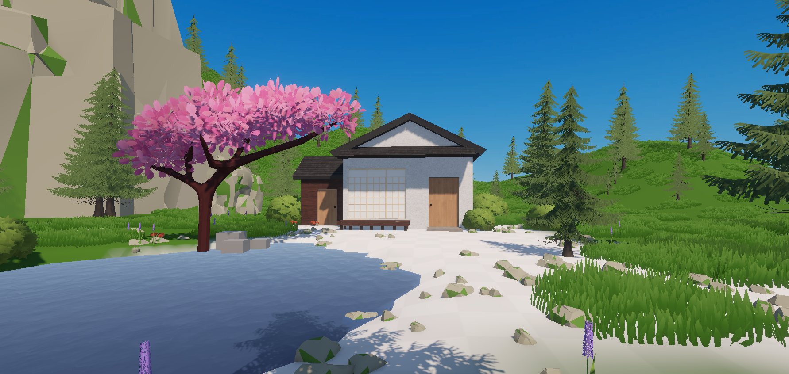

Find anyone
Search the character directory and switch to an available NPC, even when that character is far across the world.
ENTERING THE WORLD
Preparing your world…
The world could not start.
The game starts loading immediately. For the best mobile experience, rotate your phone and use fullscreen.
Neoto is an independent browser game created by a solo developer. The project began with an unusual idea: instead of only watching a game being made, members of the community could become residents inside it.
Followers request characters through the Neoto Instagram journey. Selected names and looks are recreated as NPCs, placed in one searchable world and made available for players to discover and control.
The result is part game and part living development diary. Every new character, task, item, vehicle and world system becomes another visible step in the project.

Forests, water, paths, homes and open terrain form the stage for a population created with the community. The world streams detail around the player so it can remain explorable on both desktop and mobile browsers.
Search the character directory and switch to an available NPC, even when that character is far across the world.
Tasks can award achievements, customized items and character abilities. Repeat a challenge and its completion count grows.
Walk, explore and drive through an expanding terrain while the world streams nearby characters and scenery as needed.
The game automatically shows mobile controls on touch devices.
The public development series shows the world growing in real time. Early episodes invited followers to comment during a limited window for a chance to appear in the game. Later episodes expanded gameplay and introduced more types of characters.
Character rounds and their rules are announced on the official Neoto Instagram account. Each round may have its own timing and selection requirements.
Selected community profiles inspire a new character with a name, appearance and place in the world. A request is not an automatic guarantee of selection.
Once published, players can use the in-game directory to search the full character list and switch to a character even when it is far away.
The opening episode introduced the idea of turning community members into characters inside Neoto.
Watch the episodeThe project moved beyond population building and began showing the playable systems growing around its characters.
Watch the episodeThe latest chapter introduced female characters and asked the community which features should be developed next.
Watch the episodeNew characters are created from community requests and added to the same searchable world. Each character keeps its identity while streaming and performance systems decide how much detail is needed on each device.
Join the community for development updates, game discussion, feedback and announcements about future character rounds. It is the easiest place to stay close to the project between Instagram episodes.
Useful answers about characters, devices and saved progress.
Open the character search with N on desktop or the search control on mobile. Search by name and select the result. The directory is not limited to characters currently loaded near you.
Yes. Neoto provides touch controls on mobile. Landscape orientation and fullscreen give the game more usable space and prevent browser controls from covering important buttons.
Follow @neo.got.sight and watch for a character announcement. Follow the rules written on that specific post; selection is not guaranteed.
Your default player can keep local progress in the current browser. Progress associated with published community characters may be stored online. Clearing browser data can remove local-only progress.
Neoto is an active independent project. New characters and systems are added as development continues, and the Instagram series is the clearest place to follow those changes.